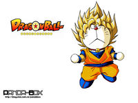
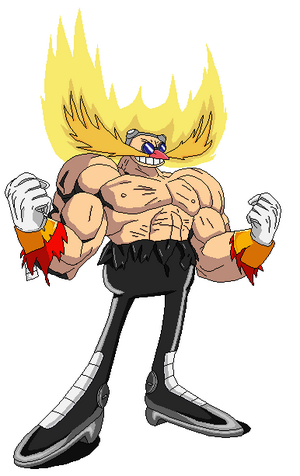
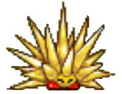

Piojo Herrera usó esta guía y le funcionó.
 La última actualización del
DOS (
Doraemon Operative System) viene con
ssj incluido
Inicio
Si estás aquí es porque le diste a Piojo.
Te aseguramos con π% de probabilidades (Pi es un número con infinitos decimales, debe de ser buena probabilidad) que llegarás a serlo de usar correctamente esta guía.
La noble tradición de ser Piojo pasando por Goku y Vegetariano. Con esta guía tú también podrás ser Superpijojin (Frikipedia se reserva el derecho a que usted no sea supersaiyajin).
Introducción al concepto abstracto de Supersaiyajin
Artículo principal: Supersaiyajin
Te estarás preguntando para que es eso de supersayan, pues es fácil:
- Has querido tener una melena puntiaguda, seccionada, rubia y brillante? Pues esta es tu oportunidad!
- Con esta guía también podrás hacer que tu sudor se transforme en energía. Impresionante!
- Poderes devastadores, rayos de energía que nada tienen que ver con el consumo de narcóticos (Se recomienda drogarse antes de empezar).
- Marcarás todo tipo de músculos incluso no existentes en el cuerpo humano.
Usa esta guía y verás tu sueño realizado, a que esperas?
 Los de
Sonic también sabían la técnica.
Objetivos
Con esta guía usted aprenderá la noble tradición de erizar su cabello e inflar sus músculos. Gracias a este manual usted obtendrá los siguientes beneficios:
- Transformarte en supersaiyajin.
Marco jurídicojudicial
Ni esta guía ni Frikipedia ni el autor de este manual, cuyos dedos fueron dirigidos por Monesvol, se hacen responsables de los destrozos que cause ni los efectos colaterales y/o secuelas producidas en usted.
El Real Decreto del 13 del 13 del 13 en su cuadragésimo sexta inmienda, párrafo ventisiete, duodécima fila, versículo quinto aléga que cualquier intento de plágio, copy-paste, robo o parodia de esta guía será penalizado con golpe de remo.
Durante la realización de esta guía no sufrió ningún ser humano ni ningún supersaiyano, tansolo murieron directioners para probar su correcto funcionamiento, todos estos donados por el centro de correción mental de Ravecroft.
Al leer el título de esta guía o saber de su existencia ha aceptado explicita e implicitamente todas las condiciones de uso de este manual.
Tanto esta guía, como la Frikipedia, como el FBI (que estará vigilándote ahora mismo), no se hacen responsables de que usted no obtenga los beneficios prometidos por el manual, salga perjudicado/a física, ecológica, económica o moralmente ni de que todo sea un sueño o un simulador virtual.
Requerimientos previos requeridos
Si has de usar esta guía, has de saber, hacer y tener unas cuantas cosillas con anterioridad. A saber:
- Saber leer.
- Saber usar cualquier dispositivo con el que acceder a Internerd y visualizar este contenido web.
- Tener alguno de esos dispositivos.
- Haberle dicho a tu madre que vas a ser supersayayin (Menudo disgusto si no se lo dices).
- Estar en posesión de alguna de las bolas de dragón o, en su defecto, una burda imitación de una.
- Tener contratado un seguro antivolcanes.
- Tomar setas alucinógenas o bayas del pokemon (opcional, pero aumenta las probabilidades de éxito).
- Ser adicto al Dragon Ball.
- Tener pelo y músculos aunque no se vean.
- No ser cani(De serlo, no solo no funcionará, sino que también morirás de eyaculación precoz).
Entorno y condicionamiento para la práctica
Si vas a transformarte en Superlokoyin deberás saber que en ciertos entornos y con ciertas condiciones es más fácil transformarse:
- En un PUB de moteros, metiéndote con su cultura pondrás tu vida en peligro y la adrenalina y el riesgo te harán más propenso a transformarte.
- En una discoteca llena de canis, metiéndote con su incultura ídem de lo anterior.
- En un barrio gitano, sin meterte con nadie, ídem de lo anterior.
- Cuando estás gastando todas tus fuerzas y ves que no puedes más.
- Otros factores son el estar cabreado, enfadado, o simplemente cansado de polleces.
- También cuando hallas recibido una buena tunda, si te quedan pilas duracell o alubias zen te las tomas y recuperas fuerzas para transformarte.
- Cosas como la temperatura del ambiente, su olor o nivel de PH pueden llegar a afectar directa, indirecta o extradirectamente.
Una cosa que debes saber antes de transformarte en Superpajajin es que hay varios niveles de Super sayano, algunos accesibles desde otros niveles o con cierta cantidad de energía:
- El nivel 1: Básicamente te vuelves rubio, con el pelo erizado cómo el de Sonic y brillante y ganas fuerza, además de poder volar y salirte un aura brillante alrededor, síntoma de que te estás consumiendo cual llama de una vela.
- El nivel 2: El pelo te crece un poco más, brilla más y obtienes más fuerza aún. (Mola, eh?)
- El nivel 3: El pelo crece aún más volviéndose melena, pero te cansas antes.
- El nivel 4: El pelo brilla tanto que se vuelve negro, pierdes algo de melena, pero te vuelves más primate, siendo así más bestia. Te sale también cola, por lo que podrás usarla en tus perversiones.
- Niveles especiales: Debido a que no somos todos iguales, hay gente que, ya sea por ser más inteligente o por ser más simple, se transforma en superguerreros especiales, como en sayan sin volverte rubio, Super saiyajin 5 o en super orangután. Frikipedia no se hace cargo de que usted se transforme en alguna forma horrenda y quede perjudicad@, use esta guía bajo su propia
irresponsabilidad.
Métodos de digievolución transformación
Ahora llega el jugo de esta guía, desde Broly hasta Piojín sabían esta técnica y ahora tú también la sabrás.
Cuando llegues a uno de esos momentos previamente citados, lo que necesitas es controlar tu ki, chi, chakra, anthrax o lo que lleves en la sangre para que sea expulsado por todos los poros de tu piel. Has de concentrarte bastante. Al liberar toda esa energía, empezarás a notar como te transformas. Prueba a quedarte quieto apretando los puños y los dientes o a agitar un poco los brazos violentamente con furia para liberar toda tu rabia.
Coreografía para la transformación

El estar ebrio puede ayudar en el baile
Puede que debido a que sea un completo imbécil tenga algún retraso mental problema o alguna dificultad, no entienda como hacer para transformarse. Aquí tenemos unos simples pasos para hacer la danza de la transformación (no confundir con la de fusión).
- Extienda sus brazos, piernas y caderas todo lo rectas y estiradas que le permita su
decrépito cuerpo.
- Comience a mover los brazos de arriba hacia abajo de forma violenta. Tenga cuidado de que en el trayecto de los brazos no haya ningún objeto sólido, podria resultar gravemente herido o romper algo.
- Repita el anterior paso varias veces (imagine que es como un motor a cuerda, como el de un cortacésped) hasta que su pelo empiece a levantarse y
arder en llamas brillar, entonces pase al siguiente paso. También, cuando se aburra de intentarlo sin resultados, puede pasar al siguiente paso.
- Grite, puede ser una palabra, una frase, una oh, no me atropella, una canción o un simple grito.
- Mantenga los puños y dientes bien apretados y haga fuerza, como cuando estás furioso o cagando o ambas cosas.
- Por último, libere toda la energía y tensión acumulada, notará que una especie de calor ha invadido todo su cuerpo, signo de que se ha convertido en Supersosín o que alguien le ha quemado a lo bonzo mientras estabas haciendo todo el paripé.
Receta para transformarse
Sabemos que sabe que sabemos que queremos que sepa que sabemos que quiere que queramos que quiera saber la receta para poder ser Supersonicsayan. Pues hoy, cocina con Jagger te trae la receta para el brebaje de transformación.
- 200mg de Lacasitos.
- 5mg de Sugus de piña.
- 1Kg de Gomina.
- Mandrágora hervida o frita.
- De 2 a 4 Naranjas de la China.
- La lata esa que tienes en la despensa pero no sabes que tiene porque no lleva etiqueta.
- 2 Hojas de papel de liar (puestas en I no en L).
- 4 ojos de búho.
- Pelos de Huapo (que no guapo) al gusto.
- Un cuenco donde mezclarlo todo (también es ingrediente porque te lo vas a comer).
- Tienes todos los ingredientes? Perfecto, en la nevera de cualquier friki no puede faltar nada de eso.
Para preparar el potaje solo hay que seguir todos estos pasos cuidadosamente, teniendo cuidado de no saltarse ninguno:
- Mezcla todos los ingredientes en el cuenco y trágatelo.
Empezarás a notar nauseas, eso significa que está surtiendo efecto, en breve tendrás tus poderes, no olvides probar el poder de volar lanzándote desde un piso 30.
Métodos anticonceptivos alternativos
Si bien el método principal no funciona contigo, bien por ser un garrulo o bien por ser un holgazán, tenemos aquí distintas formas de transformarse en Supermongolín, pero ciertas condiciones pueden verse alteradas.
- Si eres ninja de la hoja
de papel, puedes usar el jutsu supersaiyanjin shinobi no gnomo.
Si hasta un repetidor como
Nerduto puede ser super saiyajin, tú también puedes
- Si eres Mago de la academia de desintoxicación Hogwarts, puedes esnifarte una varita (método troll).
- Otra forma de transformarse es ponerte con laca el pelo pa'rriba y usar pintura amarilla inflamable para darle el color. Ahora para el aura brillante solo has de ponerte colonia con base de gasolina y prenderte fuego.
- Si eres familia de algún supersaiyajin con solo tirarte un pedo ya te deberías de transformar.
- Si eres Piojo Herrera ya sabes transformarte, así que déjanos en paz.
- Si eres una persona normal, ¿Que haces en Frikipedia?
- No, en serio, ¿Que haces en Frikipedia?
- Si eres millonario, cómprate una máquina de millones de leros que te transforme.
- Si eres Jin Kazama para que coño quieres transformarte en supersayan si el devil jin mola más?
- Si eres mi madre, porfavor no me castigues.
- Otro método menos ortodoxo se basa en ser sadomasoquista, así asocias el dolor con placer y te es más fácil transformarte independientemente de si estas bien o mal.
- Puedes comerte un supersayajín y absorber sus poderes como hacía Bubú.
 Kirby también se comió un supersayayín
Efectos secundarios y terciarios
Al transformarte, es normal que notes algunos efectos fruto del esfuerzo o del consumo de neurotóxicos. Algunos de esos efectos:
- Supersensibilisación del sentido del humor, a mayor nivel, más te ríes de todo y más bromas malas y pesadas haces.
- Hiperplasmólisi de la vejiga.
- Chulería extrema.
- Pantallazo azul de la muerte.
- Gonorrea.
- Al levantarse la cabellera, los pelos estirarán el cerebro, dejándolo atrofiado.
- Diarrea.
- Manía de hablar y razonar las cosas demasiado en vez de aprovechar esa fuerza para cargarte al rival.
- Si no te concentras bien puedes hacer que se te ericen y se te pongan amarillos otros pelos de otros sitios.
- Mr. Satán te envidiará, aunque dirá que es más fuerte que tú.
- La gente pensará que eres anormalmente friki, aunque desde tu punto de vista, eso es bueno.
- El pis puede salir en forma de energía causando quemaduras por todo el trayecto al exterior.
¿En dónde usar este gran poder?
El Jeet Kune Do ayuda. Y ser
hagua también.
Te habrás dado cuenta (por la peli de spidergay) que un poder conlleva una gran responsabilidad. Así es, Frikipedia recomienda usar este poder para las siguiente tareas:
- Abrir botes de pepinillos.
- Cerrar botes de pepinillos para fastidiar a la gente que quiera tomar pepinillos.
- Matar canis.
- Ayudar a ancianitas a cruzar la calle (lanzándolas a toda velocidad).
- Para lanzar Kamehamehaes más fuertes.
- Matar a gayber.
- Hacerme la compra.
- Yacer con tu esposa de forma salvaje.
- Vacilar en las discotecas.
- Unirte a La orden Supersaiyan para combatir el mal.
- Ayudar a regetoneros
a morir.
- Para hacerte el chulo en el GYM.
- Hacer que el peluquero lo tenga fácil para cortarte el pelo.
- Celebrar un gol.
- Cuando quieras verte guapo en el espejo.
- Para asustar palomas con la expulsión de energía.
- Recargar la batería del móvil con la energía.
- Ganar unos centímetros de altura el erizarse tu pelo (perfecto para subir a esa atracción de la feria que quieres pero no podias).
Preguntas preguntadas frecuentemente
Sabemos que debido a su falta de experiencia, desconocimiento o simplemente su ineptitud habrá sufrido algunos errores o inconvenientes que querrá solucionar o tendrá algunas dudas, aquí vienen las respuestas a algunas de sus preguntas más frecuentes.
Pregunta: ¿Por qué me sangra la nariz?
Respuesta: Porque usted es un friki.
P: He hecho lo de apretar fuertemente los puños y solo consigo que se levante un pelo, ¿cómo consigo que se levanten todos?
R: Pruebe a mojarse bien el pelo antes de empezar, así facilitará el proceso.
P: ¿Gñap, ññe gg aegñp oñ glegg?
R: Aprende mi idioma!
P: He tenido una erección durante el proceso, ¿es malo?
R: En absoluto, eso significa que sacaste un gran poder.
P: Al lanzar una onda vital con esta transformación he destruido mi planeta, ciudad o lámpara.
R: Esta guía no se hace responsable de los malos usos y errores o problemas causados por su mala genética, Frikipedia recomienda
tener un buen seguro antes de probar este tipo de cosas.
P: La gente cuando me ve por la calle me señala, me mira mal o se ríe de mí, ¿que puedo hacer para evitar esto?
R: Eso no es problema, con sus nuevas habilidades podrá lanzarles bolas de energía aniquilándoles así. Frikipedia no se hace
responsable de las muertes relacionadas con sus nuevos poderes.
Resumen
Finalizada esta guía usted ya está para transformarse y probar las ventajas e incomodidades de esta técnica. Aplíquela tanto en vida cuotidiana como en imaginaria. guía no ha conseguido matarle, otra guía lo hará (Aunque haya que lanzártela de canto).
 De: La Frikipedia, la enciclopedia extremadamente seria.
De: La Frikipedia, la enciclopedia extremadamente seria.